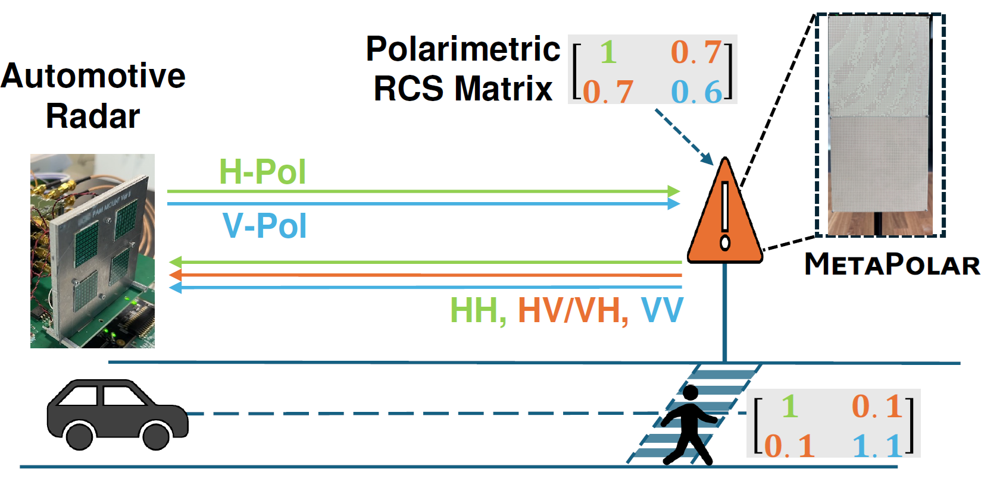

mmWave MetaSurface Road Signs
We present MetaPolar, a fully passive mmWave metasurface tag for robust Infrastructure-to-Vehicle (I2V) communication with standard automotive radars. MetaPolar exploits the polarization domain via engineered split-ring resonators and a crossed-dipole layer to generate distinct 2×2 polarimetric RCS signatures. A semi-retroreflective design maintains reliable decoding across a ±7.5° field of view. Implemented on low-cost FR-4 PCBs (<$3/tag), MetaPolar achieves 2-bit encoding per tag (scalable to 2N bits with N tags), simultaneous multi-tag reading, and seamless integration into existing radar pipelines.